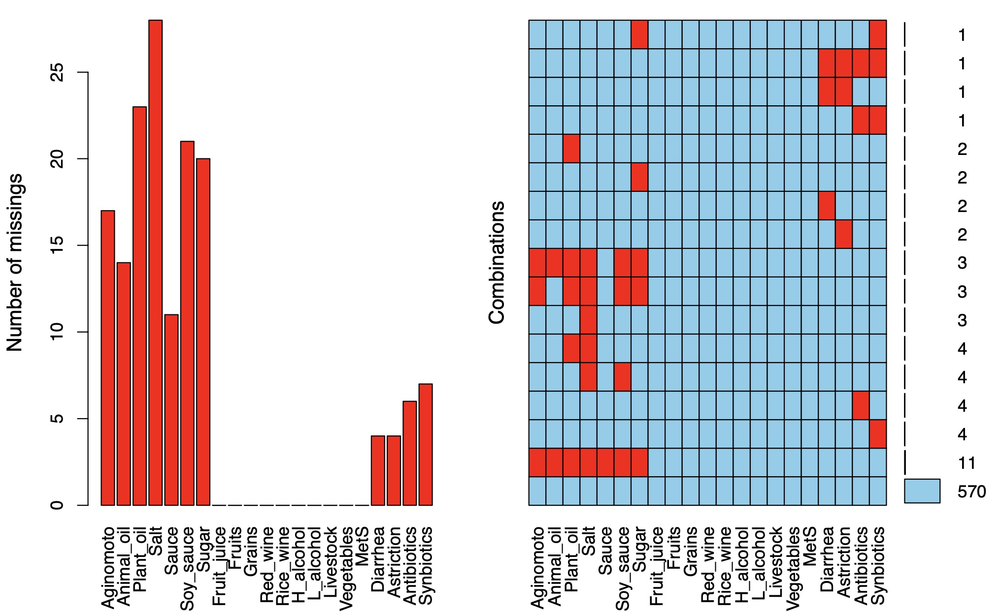

4. 表型数据分析（代码优化中）
在临床微生物数据分析中，样本表型数据主要涵盖了患者个人信息、检验结果和诊断结果等等。然而受限于患者的病情情况和信息记录的难度，在大型临床回顾性研究种研究者往往很难快速对这些复杂数据进行汇总统计。而且，由于表型数据中很多特征与微生物存在的着密切的关联，因此除了考虑疾病分型外，研究者也需要对这些表型数据进行聚类分组，例如饮食数据。因此，本章节提供了meta_summary模块和meta_regroup模块用于辅助临床研究者进行快速的表型数据统计和样本的重分组。
4.1 meta_summary模块
meta_summary模块可以对统计表型数据的进行基本的统计分析、缺失值可视化、三线表绘制。
4.1.1参数介绍
data样本表型数据，格式需要符合
3.2格式要求。estimate_group设定三线表绘制时的主要分组。
missing_plot设定是否显示缺失值评估图。
keep_col设定不纳入统计的列，主要用于指定样本名称。【默认：SampleID】
width输出缺失值图形的宽度。
height输出缺失值图形的高度。
4.1.2 基本用法
代码示例：
library(EasyMicroPlot)
# 加载表型数据，格式需要满足格式需要符合3.2格式要求
data(EMP)
meta_data <- EMP$meta # 这里是内置的示例数据，用户可以读取自己的数据
# 进行计算
meta_re <- meta_summary(data = meta_data,estimate_group = 'MetS',keep_col = 'SampleID')
meta_re$summary_info # 表型数据的基本统计信息
meta_re$missing_plot # 表型数据的缺失值信息
meta$summary_table # 表型数据三线表
基本计算结果：
# 这里仅选择前六列作为展示
meta_re$summary_info[,1:6]
Aginomoto Animal_oil Plant_oil Salt Sauce Soy_sauce
Min. : 0.00 Min. : 0.00 Min. : 0 Min. : 0.0 Min. : 0.00 Min. : 0.0
1st Qu.: 0.00 1st Qu.: 0.00 1st Qu.: 680 1st Qu.: 67.0 1st Qu.: 0.00 1st Qu.: 83.0
Median : 0.00 Median : 0.00 Median :1000 Median :100.0 Median : 0.00 Median : 150.0
Mean : 18.89 Mean : 24.92 Mean :1209 Mean :115.2 Mean : 25.42 Mean : 217.5
3rd Qu.: 25.00 3rd Qu.: 0.00 3rd Qu.:1500 3rd Qu.:133.0 3rd Qu.: 25.00 3rd Qu.: 250.0
Max. :200.00 Max. :1250.00 Max. :5333 Max. :400.0 Max. :500.00 Max. :6667.0
NA's :17 NA's :14 NA's :23 NA's :28 NA's :11 NA's :21
# 缺失值基本统计
meta_re$missing_plot
Missings in variables:
Variable Count
Aginomoto 17
Animal_oil 14
Plant_oil 23
Salt 28
Sauce 11
Soy_sauce 21
Sugar 20
Diarrhea 4
Astriction 4
Antibiotics 6
Synbiotics 7
图形结果展示：
# 缺失值展示
meta_re <- meta_summary(data = meta_data,estimate_group = 'MetS',
keep_col = 'SampleID',width = 10,height = 10)

# 三线表
meta_re$summary_table
4.2 meta_regroup模块
4.2.1参数介绍
data样本表型数据，格式需要符合
3.2格式要求。new_col_id重分组后的新名称。
col_str等级变量的列名称。
col_num连续变量的列名称。
keep_col设定不纳入统计的列，主要用于指定样本名称。【默认：SampleID】
regroup重新命名新分组。
clust_min最小评估分组。
clust_max最大评估分组。
clust_method设定分组聚类方法。（ward.D, ward.D2,single,complete,average,mcquitty,median,centroid,kmeans）【默认：kmeans】
clust_dis设定聚类距离计算方法。（euclidean,maximum,manhattan,canberra,binary,minkowski）【默认：euclidean】
silent设定计算中是否显示输出信息。【默认:False】
4.2.2 基本用法
代码示例：Tips1：本次示例采用了广东省微生物计划的深圳南山区部分代谢综合征、饮食和排便情况数据。meta_regroup函数将首先根据Nbclust包的26种指标对饮食情况的连续变量数据进行投票判断，再结合代谢综合征的情况，重新分组394名受试者数据。
# 示例采用了EMP内置的数据，用户可选择自己的数据
library(EasyMicroPlot) # 加载包
data(EMP)
# 数据清洗
meta_data <- EMP$meta
meta_data <- na.omit(meta_data)
meta_data <- meta_data[meta_data$Diarrhea=='n'& meta_data$Astriction=='n'& meta_data$Antibiotics=='n'& meta_data$Synbiotics=='n',]
# 最终meta_data数据包含一个MetS的等级变量数据和一系列连续变量数据
col_str <- 'MetS'
col_num <- colnames(meta_data)[!colnames(meta_data) %in% c('SampleID','MetS','Diarrhea','Astriction','Antibiotics','Synbiotics')]
col_num
# 进行分组评估
meta_regroup <- meta_regroup(data = meta_data,new_col_id = 'Group',col_str = col_str,
col_num = col_num,keep_col = 'SampleID',regroup = T,clust_min = 2,clust_max = 9)
meta_regroup$regroup_info # 等级变量和连续变量重分组具体情况
meta_regroup$regroup_data # 根据等级变量和连续变量充分组的结果
基本统计结果：
# 重分组结果信息
meta_regroup <- meta_regroup(data = meta_data,new_col_id = 'Group',col_str = col_str,clust_method = kmeans,
col_num = col_num,keep_col = 'SampleID',regroup = T,clust_min = 2,clust_max = 9)
***********************************************************************
*** : The best number of clusters for Continuous variable data is 2
*** : The best number of clusters for Categorical variable data is 2
***** Conclusion *****
***: According to the majority rule, the best number of clusters is 4
***********************************************************************
# 重分组中连续变量和等级变量的分组情况
meta_regroup$regroup_info
$data_num_clust_best
[1] "2"
$data_str_clust_best
[1] 2
$data_clust_best
[1] 4
# 重分组后样本，这里仅展示前10行
re$regroup_data[1:10,]
Tips2：Group列为直接将原有组名进行拼接后得到的新组名，regroup列为根据Group重新设置的新组名。
SampleID Group regroup
1540 G440305004 Control_1 Group_C
1541 G440305006 Control_2 Group_D
1542 G440305007 Cases_2 Group_B
1544 G440305009 Control_1 Group_C
1545 G440305010 Control_2 Group_D
1546 G440305011 Control_2 Group_D
1548 G440305013 Control_1 Group_C
1553 G440305018 Control_2 Group_D
1555 G440305020 Control_2 Group_D
1556 G440305021 Control_2 Group_D
图形结果展示：
# 26种算法对患者饮食状况连续变量的投票分组
meta_regroup$regroup_info$data_num_clust_plot